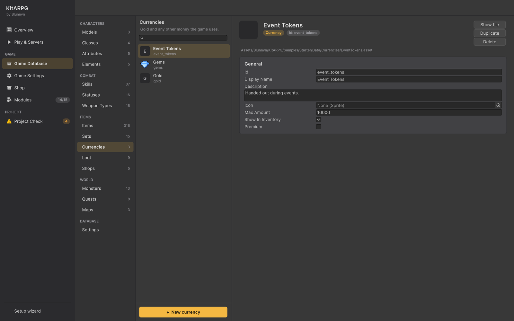

游戏内容
货币
货币是玩家在背包之外持有的钱：金币、活动代币、荣誉点数，以及游戏内商城使用的付费货币。本页介绍货币的每个字段、哪一种是金币、玩家如何获得和消费货币，以及每种货币在单人模式和 MMO 中如何保存。
货币是什么
货币是角色（对于付费货币则是账号）持有的一个数量。它不占背包格子，也没有重量。每种货币都是一个资源，因此你可以根据游戏需要添加任意多种。
游戏数据库把其中一种指定为金币：怪物掉落、NPC 商店默认收取、锻造、公会和市场使用，以及仓库保管的钱。示例中有三种货币：
| 货币 | Id | 用途 |
|---|---|---|
| Gold | gold |
掉落、商店、锻造、市场。没有上限。 |
| Event Tokens | event_tokens |
活动期间发放。上限 10,000。 |
| Gems | gems |
付费货币：在游戏内商城（P）消费。不在背包中显示。 |
货币在编辑器中的位置

Game Database > Items > Currencies 列出每种货币。在那里创建（+ New currency）或用 Create > KitARPG > Items > Currency 创建。
哪一种是金币在 Game Database > Settings 的 Gold（gold）字段中设置。
字段
| 字段 | 作用 | 默认值 |
|---|---|---|
Id（id） |
随每个持有它的角色保存。修改它会丢失这些余额。 | 来自文件名 |
Display Name（displayName） |
玩家在背包、商店和消息中看到的名称。 | 空 |
Description（description） |
在 Game Database 中显示。 | 空 |
Icon（icon） |
在背包中的数量旁以及商店价格中显示。 | None |
Max Amount（maxAmount） |
角色最多能持有的数量。0 表示不限。 |
0 |
Show In Inventory（showInInventory） |
在背包下方、金币旁边列出。 | On |
Premium（premium） |
由账号而非角色持有，记录在只有服务器能写入的账本中。用真实货币购买或在游戏中赚取，在游戏内商城消费。 | Off |
无论 Show In Inventory 如何设置，金币总会在背包中显示。
玩家如何获得货币
| 来源 | 方式 | 页面 |
|---|---|---|
| 击杀怪物 | 掉落表在最小值和最大值之间掉落金币。开启 Game Settings 中的 Auto Gold 时直接进入钱袋；否则与物品一起掉落。 | 掉落 |
| 任务奖励 | 任务奖励可以包括金币和任何其他货币。 | 任务 |
| 对话和 NPC 选项 | Give Currency 动作增加任意货币（留空为金币）。 | 条件与动作 |
| 向 NPC 出售 | 开启向 NPC 出售时，商店支付金币。 | NPC 商店 |
| 市场 | 售出的商品通过邮件支付金币。 | 市场 |
| GM 命令 | /gold amount [player] 和 /currency id amount [player]。 |
GM 命令 |
玩家如何消费货币
| 地点 | 方式 | 页面 |
|---|---|---|
| NPC 商店 | 每个商店以一种货币收费：其 Currency 字段，留空时为金币。收取 Event Tokens 的商店就是活动商人。 | NPC 商店 |
| 对话和 NPC 选项 | Charge Currency 动作收取一个数量，并将其显示为选项的价格。Currency 条件检查余额。 | 条件与动作 |
| 锻造 | 强化步骤和取出宝石花费金币。 | 套装、强化与镶孔 |
| 技能训练师、公会、市场手续费 | 金币。 | NPC、公会 |
| 游戏内商城 | 只能使用付费货币。 | 商城 |
上限与溢出
- 货币永远不会低于 0。
- 设置了 Max Amount 时，余额会被限制在该值。
- 超过上限的金币不会丢失：钱袋放不下的部分会进入玩家仓库中的金币，适用于掉落、邮件、公会取款和任务奖励。从仓库取出金币时，最多只能取到钱袋放得下的数量。
- 其他货币超过上限的部分同样不会丢失：多出的部分保存在角色身上，一旦花费腾出空间就会进入余额。玩家会收到提示，告知有多少在等待。
付费货币
付费货币是游戏内商城的货币（示例中的 Gems）。它与其他所有货币的运作方式不同：
- 它属于账号，因此账号的所有角色共享一个余额。
- 余额存放在 Shop 服务中，记录在只有服务器能写入的账本（
currency_ledger）里。地图服务器与 Shop 服务通信；客户端永远不会。 - 它可以被给予（任务奖励、Give Currency 动作、
/currency），给予会记入账本。它不能被收取类的动作或 GM 命令拿走；它只能在游戏内商城消费，由账本检查余额。 - 它通过 Shop 服务的支付设置用真实货币购买。
- 单人模式中没有游戏内商城。在那里给予的付费货币不会去往任何地方。
在某种货币上勾选 Premium 使其成为商城的货币，通常还要取消勾选 Show In Inventory：商城窗口会显示余额。关于商城及其服务的一切见商城和 Shop 服务。
制作货币
本例添加 Honor（荣誉），在任务中获得，在 PvP 商人处消费。
- 打开 Game Database > Items > Currencies 并按 + New currency。在 Id 中输入
honor，在 Display Name 中输入Honor。设置一个 Icon。 - 把 Max Amount 设为 50000，保持 Show In Inventory 开启。
- 作为奖励发放：在任务的奖励中添加一个货币奖励，选择 Honor 和数量。或在对话台词中添加一个选择 Honor 的 Give Currency 动作。
- 制作一个收取它的商店：在 Game Database > Items > Shops 中创建一个商店，把其 Currency 设为 Honor，并列出它出售的物品及价格。在某个 NPC 上放一个使用该商店的 Shop 选项。
- 进入 Play：Honor 显示在背包下方金币旁边，该商人的价格以 Honor 显示。
单人模式和 MMO
| 内容 | MMO | 单人模式 |
|---|---|---|
| 金币 | 角色的 Gold 列。 |
角色的 JSON 内。 |
| 其他货币 | 角色的 Currencies 列（JSON）。 |
角色的 JSON 内。 |
| 付费货币 | Shop 服务的账本，按账号。 | 不可用。 |
数据中已不存在的货币的余额会原样保留，因此误删某种货币后再加回来不会丢失任何东西。在游戏中，拥有者会收到自己的余额（其他玩家永远看不到）；只有服务器能修改它们。
提示
- 对任何你不希望玩家交易的东西，使用单独的货币而不是金币：货币不能交易或邮寄，物品和金币可以。
- 为活动货币设置 Max Amount，让玩家在下一次活动前把它们花掉。
常见错误
- 金币不掉落或商店不显示价格。 Game Database > Settings > Gold 为空。把它设为你的金币货币。
- 某种货币没有在背包中显示。 Show In Inventory 关闭了，或者该货币不在数据库的 Currencies 列表中。
- 付费货币的给予没有到账。 地图服务器没有连接到 Shop 服务，或者你处于单人模式。